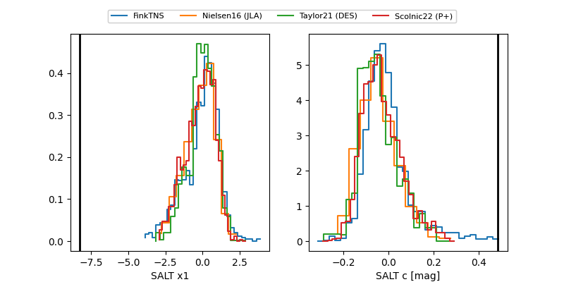

FINK: ZTF25abppnpb
Lasair: ZTF25abppnpb
ALeRCE: ZTF25abppnpb
TNS: 2025xdq
YSE: 2025xdq
ZTF25abppnpb (ztf,fink)
2025xdq (tns,yse)
ATLAS25lkf (atlas)
PS25how (panstarrs)
equatorial (ra, dec) = (315.4042,-22.10594)
galactic (l, b) = (25.0838,-37.96482)

last atlasc=19.16, atlaso=19.33, ps1::w=19.16, ztfg=20.00, ztfr=18.84
2 atlasc, 3 atlaso, 2 ps1::w, 3 ztfg, 5 ztfr detections